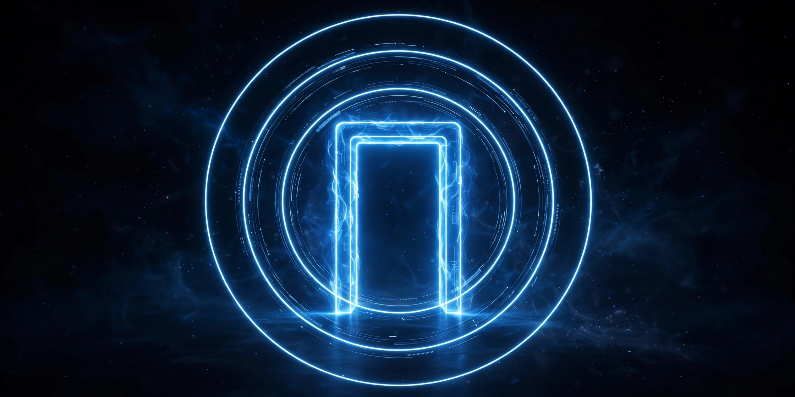

Ovia Inc — Artículos
Zero Trust para agentes: identidad después de OAuth

Aplicamos confianza cero a los agentes que actúan en nombre de equipos humanos: identidad propia, permisos mínimos y registro verificable de cada acción.
La base viene de trabajo real: autenticación con OAuth 2.0, SAML, OpenID Connect y JWT, temas ya tratados en Medium en septiembre de 2023, y seguridad de datos con confianza cero, en agosto de 2024.
Un agente rápido sin identidad clara solo produce errores más rápido. La identidad define qué puede hacer cada agente, con qué permisos y bajo qué registro.
Primero la identidad, después la autonomía.